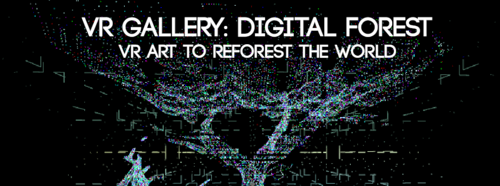
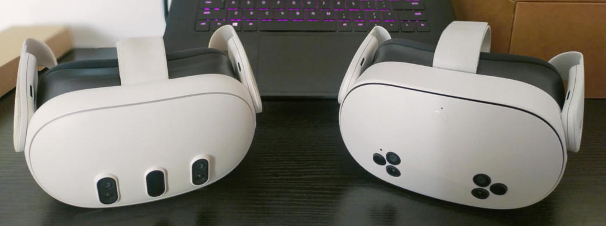
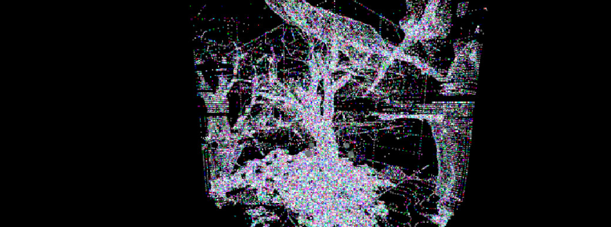
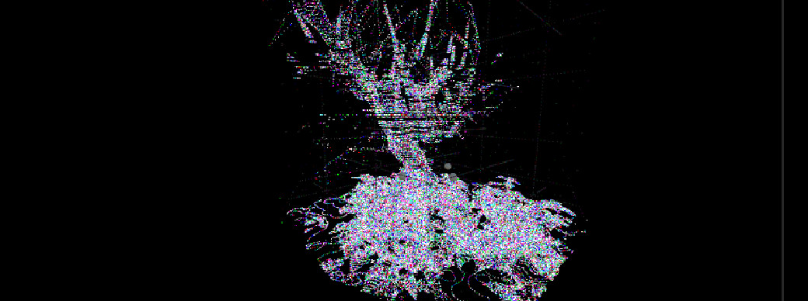
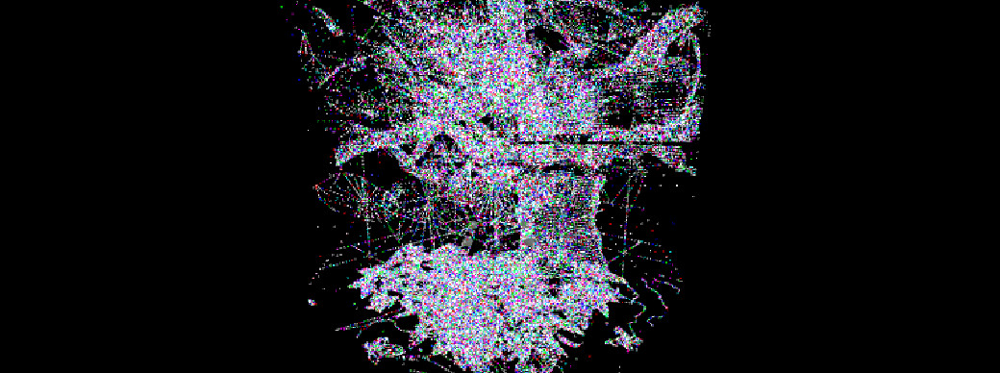
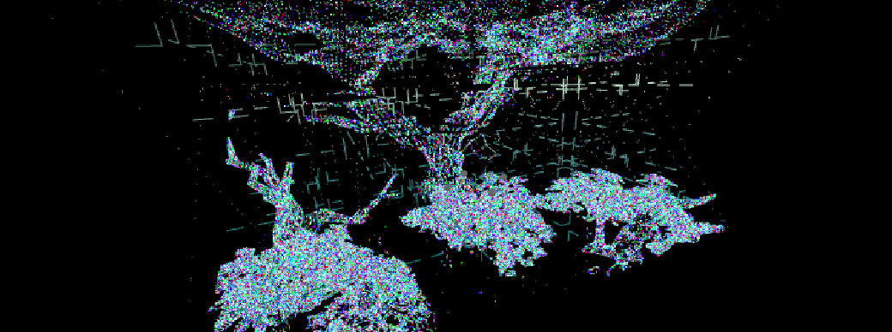
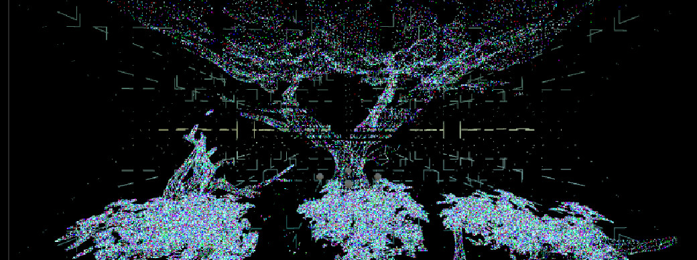

VR Gallery: Digital Forest
Belief:
At Null Vertex Interactive, we believe that art and technology can be powerful tools to create a positive impact on the world. We want to create a virtual reality experience to raise awareness among people about the serious problem of deforestation.
VR Gallery: Digital Forest
Inspiration:
Inspired by the growing global deforestation crisis, we decided to create a digital forest where each piece of art represents a real place in danger of deforestation. We aim to create an immersive virtual reality experience using cutting-edge technologies like photogrammetry, hand tracking, and VR to raise awareness about the urgent and devastating issue of deforestation. By blending art, technology, and environmental activism, this project will transport users into a digital forest, allowing them to witness the beauty of nature, through interactive elements and lifelike environments, we hope to inspire action and foster a deeper connection to our planet’s fragile ecosystems.
VR Gallery: Digital Forest

Goal:
With your help, we will not only preserve its memory in the virtual world but also change people's minds about being more respectful toward nature.
Statistics & Impact:
Every year, we lose more than 10 million hectares of forests due to deforestation. This not only affects biodiversity but also contributes to climate change and threatens the future of our planet. At Null Vertex Interactive, we believe it’s time to take action and use technology to make a difference.
Digital Forest Initiative:
With Digital Forest, we’ve created a bridge between the virtual and the real world. Every digital tree you adopt in virtual reality will not only be a unique piece of art but will also contribute to change the mind of people who wants to try this experiences. This way, you’ll be preserving the memory of lost forests while helping to create new ones in people's minds. Our digital forest is composed of what will be called the Digital Forest Box, compatible with Meta Quest 2 and Meta Quest 3 technology. The Forest Box is a virtual reality environment that contains point cloud data, which was created using photogrammetry. To achieve this, we first had to scan forested areas for its creation. Each Digital Forest Box will feature an environment exported to extended reality, where the owner can move freely and enjoy an extrasensory experience. With the help of hand tracking, you can interact with the point cloud. The box also includes spatial sound technology, allowing you to hear the sounds of the forest, which were recorded in various forested areas. Additionally, other sounds will emerge as you move around, providing a rich visual and auditory experience as you explore the underbrush and trees with your hands. If the project is successfully funded, we plan to bring these experiences to the general public, where they can gain a critical perspective on the issue of deforestation. They will be able to see your name as the owner of a tree and learn more about the current impact on our planet. https://www.youtube.com/watch?v=BCXRzdxb_3U
VR Gallery: Digital Forest
Digital Forest Box Examples::
  VR Gallery: Digital Forest
Extended Digital Forest Box Examples::
The Extended Digital Forest Box (double the size (1 x 2)). like the standard Digital Forest Box, follows the same photogrammetry processes to capture the point cloud of a forest environment. However, it has undergone modern optimization processes to ensure it runs smoothly on a Meta Quest standalone headset.
 *Your digital tree can be explored in Meta Quest 2 & 3 and viewed on your smartphone via a dedicated mobile app (APK).
VR Gallery: Digital Forest
Forest Global App:
Your exclusive window to the digital forest. With this app, you’ll gain access to a private gallery featuring 10 unique pieces of digital tree art, created to honor the memory of forests, you’ll see your name as a contributor, a permanent reminder of your impact on this project.
.
Risks and challenges:
The primary risks and challenges of this project lie in the optimization and development of the virtual reality (VR) experience. Ensuring smooth performance on standalone VR devices like the Meta Quest 2 and 3 requires meticulous optimization of high-resolution assets, such as point cloud data and photogrammetry-based environments, which can be resource-intensive. Balancing visual fidelity with performance is critical to avoid issues like lag, frame drops, or crashes, which could disrupt the user experience. Additionally, developing intuitive interactions, such as hand tracking and spatial audio integration, demands rigorous testing and refinement to ensure accessibility and immersion. The complexity of creating a seamless bridge between the virtual and real worlds, while maintaining scalability for future updates, further adds to the technical and logistical challenges of the project.